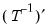

factor factor object declaration.
To declare a factor object, use the factor keyword, followed by a name to be given to the object. See also
factest.
gls generalized least squares estimation.
ipf iterated principal factors estimation.
ml maximum likelihood estimation.
pace non-iterative partitioned covariance estimation (PACE).
pf principal factors estimation.
uls unweighted least squares estimation.
anticov display the anti-image covariance matrix of the observed matrix.
display display table, graph, or spool in object window.
eigen display table or graph of eigenvalues of observed, scaled observed, or reduced covariance matrix.
fitstats show table of Goodness-of-Fit statistics.
fitted show fitted and reproduced covariances.
fsel display results of Bai and Ng or Ahn and Horenstein factor selection techniques.
loadings display loadings tables or graphs.
maxcor display maximum absolute correlations for the observed covariance matrix.
msa compute and display Kaiser’s Measure of Sampling Adequacy (MSA).
observed display observed covariance matrix, scaled covariance matrix, or number of observations used in analysis.
output display main factor analysis estimation output.
partcor show observed partial correlation matrix.
reduced display reduced covariance matrix using initial or final uniquenesses.
resids display residual covariance estimates.
rotateout show rotated factors and rotation estimation results.
scores compute factor score coefficients and scores and display results.
smc display table of squared multiple correlations for the observed covariance matrix.
clearhist clear the contents of the history attribute.
copy creates a copy of the factor.
label label view of factor object.
makescores compute and save factor score scores series.
olepush push updates to OLE linked objects in open applications.
rotate perform an orthogonal or oblique factor rotation.
setattr set the value of an object attribute.
@valid (0, 1) indicator for whether the factor object has valid factor estimates (1=true).
@nvars number of variables to analyze.
@obs number of observations.
@balanced (0, 1) indicator for whether the covariance matrix uses a balanced sample (1=balanced).
@ncondition number of conditioning variables (including the constant term for centered covariances).
@nnfi Non-normed Fit Index (generalized Tucker-Lewis index).
@rfi Bollen’s Relative Fit Index.
@nfi Bentler-Bonnet’s Incremental Fit Index.
@ifi Bollen’s Incremental Fit Index.
@cfi Bentlers Comparative Fit Index.
Each of the following takes an optional argument “(0)” (e.g., “@params(0)”). If no argument is provided, the data member returns the value for the estimated factor specification. If the optional argument is provided, the member returns the value for the independence (zero factor) model.
@params[(0)] number of estimated parameters.
@objective[(0)] value of the objective function in factor extraction.
@aic[(0] Akaike Information Criterion.
@sc[(0)] Schwarz Information Criterion.
@hq[(0)] Hannan-Quinn Information Criterion.
@ecvi[(0)] Expected Cross-validation Index.
@chisq[(0)] Chi-square test statistic for model adequacy.
@chisqdf[(0)] Degrees of freedom for the chi-square statistic.
@chisqprob[(0)] p-value for the chi-square statistic
@bartlett[(0)] Bartlett’s adjusted version of the Chi-square test statistic.
@bartlettprob[(0)] p-value for Bartlett’s adjusted version of the chi-square statistic.
@rmsr[(0)] Root mean square residuals.
@srmsr[(0)] Standardized root mean square residuals.
@gfi[(0)] Jöreskog and Sörbom Generalized Fit Index.
@agfi[(0)] Jöreskog and Sörbom Adjusted Generalized Fit Index.
@rmsea[(0)] Root MSE approximation.
@obsmat matrix of number of observations used for each pair of variables.
@cov observed covariance or correlation matrix.
@common common variance fitted covariance matrix (fitted matrix with communality on the diagonal).
@resid residual matrix (observed–fitted).
@reduced reduced covariance matrix using final uniqueness estimates.
@ireduced reduced covariance matrix using initial uniqueness estimates.
@iunique vector of initial uniqueness estimates.
@unique vector of final uniqueness estimates.
@communal vector of final communality estimates.
@rowadjust vector of row standardization terms (used to rescale results so that the uniqueness and communality estimates add up to the observed diagonals).
@factstruct factor structure matrix (correlation between factors and the variables).
@attr("arg") string containing the value of the
arg attribute, where the argument is specified as a quoted string
.
@command full command line form of the Factor estimation command. Note this is a combination of
@method,
@options, and
@spec.
@description string containing the Factor object’s description (if available).
@displayname returns the Factor object’s display name. If the Factor object has no display name set, the name is returned.
@method command line form of the Factor estimation method type.
@name returns the Factor object’s name.
@options command line form of estimation options.
@smpl sample used for estimation.
@spec original factor specification.
@type returns a string with the object type: “FACTOR”.
@updatetime returns a string representation of the time and date at which the Factor was last updated.


.
@rotmatinv loadings rotation matrix: .@factcor factor correlation matrix.@factstruct factor structure matrix (correlation between factors and the variables).@attr("arg") string containing the value of the arg attribute, where the argument is specified as a quoted string.@command full command line form of the Factor estimation command. Note this is a combination of @method, @options, and @spec.@description string containing the Factor object’s description (if available).@detailedtype returns a string with the object type: “FACTOR”.@displayname returns the Factor object’s display name. If the Factor object has no display name set, the name is returned.@factnames factor names.@method command line form of the Factor estimation method type.@name returns the Factor object’s name.@options command line form of estimation options.@smpl sample used for estimation.@spec original factor specification.@type returns a string with the object type: “FACTOR”.@updatetime returns a string representation of the time and date at which the Factor was last updated.@varnames variable names.